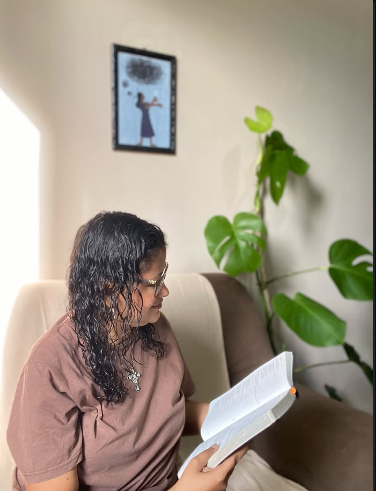
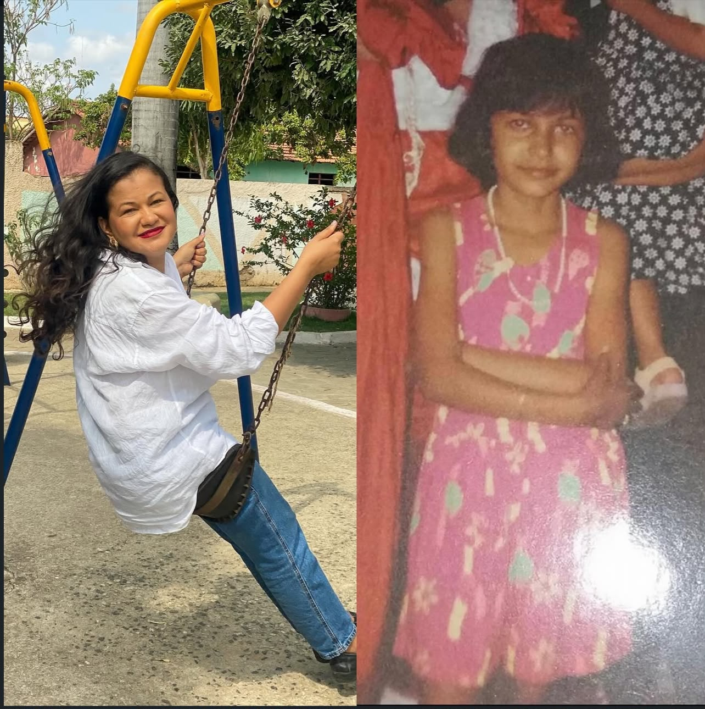
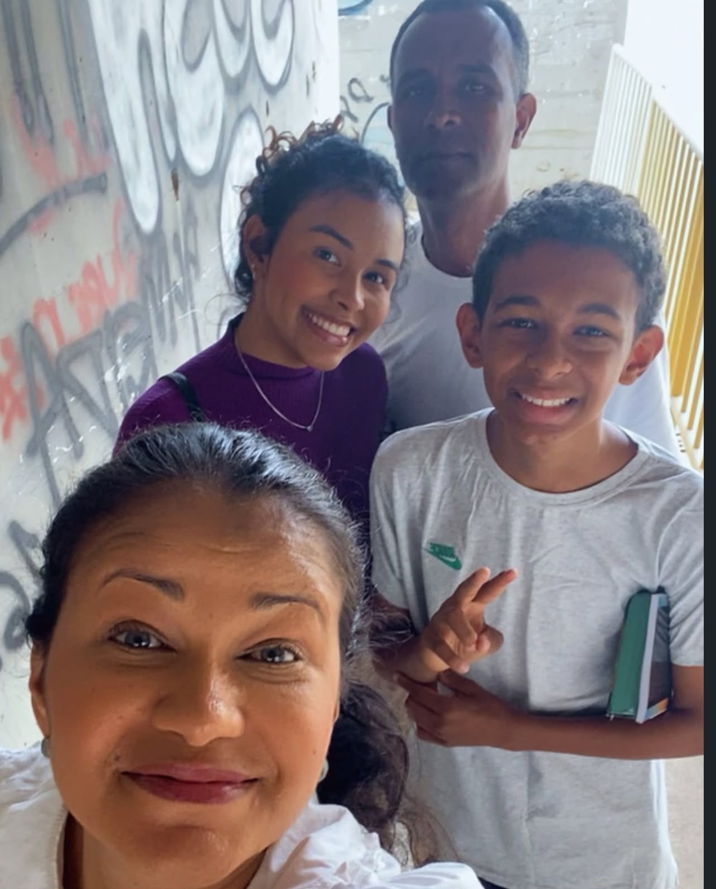
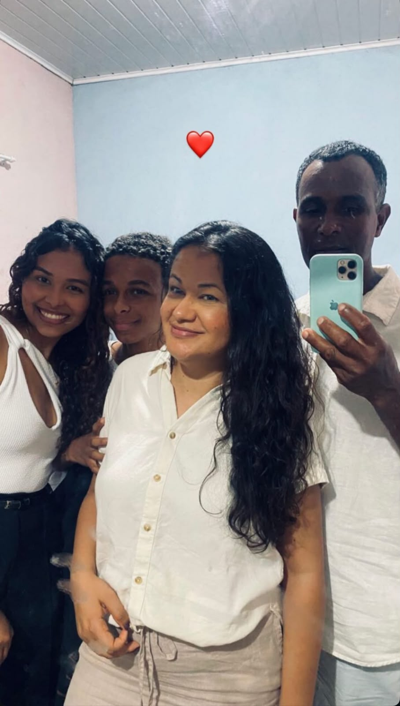

Um espaço seguro e acolhedor para que você possa se reconectar consigo mesmo, ressignificar suas experiências e encontrar equilíbrio emocional.

Sou psicanalista clínica com foco em escuta qualificada e acolhimento emocional. Acredito que cada pessoa carrega em si a capacidade de se reconhecer e se transformar, e meu papel é facilitar esse processo.
Atuo com base nos princípios da psicanálise, oferecendo um espaço livre de julgamento onde seus sentimentos, pensamentos e angústias podem ser escutados com atenção e respeito.
Comprometimento
Fé

Sou Natália Oliveira, psicanalista cristã, e minha trajetória profissional nasceu de uma história profundamente pessoal de dor, transformação e restauração.
'Ainda na infância, vivi uma experiência de abuso sexual que marcou minha história e afetou minha forma de enxergar a mim mesma, meus relacionamentos e o mundo ao meu redor. Durante muitos anos, carreguei esse trauma sem compreender completamente o quanto ele ainda influenciava minha vida.'
Com o passar do tempo, encontrei na Psicanálise um caminho para compreender aquilo que durante tantos anos apenas doía. Foi através do meu próprio processo que comecei a perceber que minha história não precisava continuar sendo definida pelo trauma.
Mas minha transformação também passou pela fé. Em meu encontro com Deus, compreendi que minha identidade não estava no que fizeram comigo. A fé me ajudou a enxergar novos significados para minha caminhada e a reconhecer que a dor que um dia me aprisionou também poderia se transformar em propósito.
Hoje, como psicanalista cristã, caminho ao lado de mulheres que ainda se sentem presas ao passado, ao medo, à culpa, à vergonha ou às marcas de experiências que acreditam que nunca poderão superar.
Acredito que você não é aquilo que fizeram com você. Sua história pode ser elaborada, sua identidade pode ser reconstruída e existe esperança para um novo capítulo.
Ajudo mulheres que carregam dores que se repetem, que doem e que ainda não foram elaboradas — muitas vezes raízes na infância, em traumas silenciados, em abusos que ficaram guardados por anos.
Com um olhar cristão sobre a mulher e sua história, acredito que Deus não deixou nenhuma ferida sem propósito. Cada dor pode ser transformada, cada cicatriz pode contar uma história de restauração.
"Porque eu bem sei os planos que tenho para vocês, diz o Senhor, planos de fazê-los prosperar e não de causar dano, planos de dar a vocês esperança e um futuro."
Jeremias 29:11
Um acompanhamento terapêutico estruturado para mulheres que desejam compreender a raiz de suas dores, ressignificar experiências do passado e reconstruir sua identidade.
Quero conhecer o processoEntender sua história, suas raízes e o que ainda precisa ser acolhido e elaborado.
Trabalhar as dores, os traumas e as experiências que ainda não encontraram sentido.
Construir uma nova relação consigo mesma, fortalecendo sua identidade e sua fé.
Ultrapassar as barreiras do passado e viver com propósito e paz interior.
Cada pessoa é única, e o processo terapêutico é construído de acordo com as necessidades e o ritmo de cada um.
Trabalhamos juntos para compreender as origens da ansiedade e desenvolver estratégias de enfrentamento que promovam equilíbrio e paz interior.
A psicanálise é um caminho para se olhar por dentro, entender seus padrões e descobrir quem você realmente é, além das máscaras sociais.
Explore as dinâmicas dos seus relacionamentos, compreenda seus vínculos afetivos e construa conexões mais saudáveis e genuínas.
Um espaço seguro para acolher a dor, ressignificar perdas e encontrar forças internas para retomar o sentido de vida.
Fortaleça sua relação consigo mesmo, reconheça seu valor e desenvolva uma autoimagem mais coerente e acolhedora.
O processo analítico é uma jornada de crescimento, onde novas possibilidades de ser e viver se revelam.
Um momento para você me conhecer e entender como posso ajudar na sua jornada.
Agendar agoraUm grupo exclusivo de mulheres que estão no processo de cura, restauração e autoconhecimento. Um espaço de acolhimento, compartilhamento e oração.
Juntas, fortalecemos a fé, elaboramos dores e caminhamos rumo à liberdade emocional com Deus no centro.
Espaço seguro para compartir sem julgamento.
Caminhamos juntas com Deus no centro da cura.
Mulheres se reconectando com sua identidade e propósito.
No meu canal, compartilho reflexões sobre psicanálise, saúde emocional e a visão cristã sobre a vida da mulher.
Um chamado para se reconectar com sua identidade.
Assistir agora →Reflexão sobre autoconhecimento e limites.
Assistir agora →Um convite para se reconectar com a fé.
Assistir agora →Minha história de vida se tornou minha missão: caminhar ao lado de mulheres em seus processos de cura, ressignificação e liberdade.
Cada experiência vivida, cada dor elaborada e cada passo na fé me trouxeram até aqui — para oferecer um olhar sensível, profundo e esperançoso para mulheres que ainda se sentem presas ao passado.
Em breve, compartilharei em forma de livro tudo o que vivi, aprendi e construí ao longo dessa jornada. Uma obra para mulheres que precisam saber que existe esperança para um novo capítulo.


Sou mãe, sou esposa, sou filha. Minha família é o meu porto seguro e a razão de todo o meu cuidado e dedicação com cada mulher que me procura.
Acredito que o amor que recebo em casa é o mesmo que compartilho nas sessões: acolhimento, paciência e fé.
Saiba maisNo meu Instagram, compartilho conteúdos sobre saúde emocional, psicanálise e a visão cristã sobre a vida da mulher. É um espaço de acolhimento, reflexão e esperança.
Venha me acompanhar e descobrir histórias, vídeos e mensagens que podem tocar o seu coração.
@ Siga no InstagramVídeos curtos com reflexões, dicas e conteúdos sobre psicanálise, saúde emocional e a visão cristã sobre a vida da mulher.
Siga no TikTokAgende sua consulta e descubra como a psicanálise pode transformar sua relação consigo mesmo e com o mundo.
Agende agoraEstou disponível para esclarecer suas dúvidas e agendar sua primeira sessão. Cuidar de você começa com um passo.